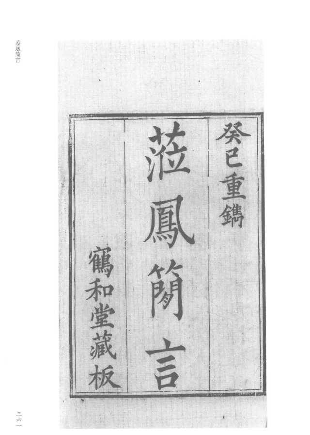
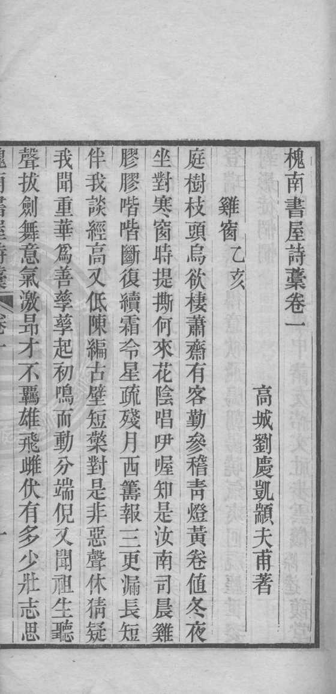

著作
才元刘氏先人的著作，按作者世次排列。每部书都附原书影印，原文加了标点和注释，篇幅较短的还逐句译成白话。
-

蒞鳳簡言
十世刘泽霖公任陕西凤翔知府时的公文集：给上司的详文、给百姓的告示、祭文和劝民歌，记下清初凤翔的圈地、逃人、钱粮和命案。七世孙庆凯公重刻，六世孙曾璇公作后叙。
阅读 › -

春秋書法比義
十五世刘曾璇公研究《春秋》的专著：按鲁十二公逐条列出经文，把用字相近的经文放在一起比较，推求孔子的褒贬。书前有王鼎序，书后有曾璈公等人的跋。全书八万多字，只加标点和注释，不作白话翻译。
阅读 › -

蓮窗書室詩鈔
十五世刘曾璇公晚年亲手删定的诗集，约二百首，多以诗记事：师友唱和、兄弟往还、宦游所见，还有祭业师刘皋闻的诔文。次子庆凯公刻，孙溎炡公校字；书后有庆凯公和陈光绪的跋。国图本上还有后人手写的批语。只加标点和注释，不作白话翻译。
阅读 › -

高城劉蔭渠先生傳
十五世刘曾璈公为长兄刘曾璇公（号荫渠）写的传：少年“书橱”、科场失意、做了二十年学官、晚年著书，兄弟一生相伴。
阅读 › -

鹽山劉蔭渠公行述
十六世庆元公、庆凯公为父亲刘曾璇公、母亲吴太淑人写的行述：家世、科场与学官生涯、著述教子、晚年随子在山东，以及母亲的为人和子孙名录。
阅读 › -

槐南書屋詩稿
十六世刘庆凯公的诗集，约四百首。庆凯公长期在山东做官，诗中多记赈灾、治河、劝捐、修城等政事，也写师友唱和与家人骨肉之情。卷首有《明湖校士图》题咏，书前有潘震乙序。只加标点和注释，不作白话翻译。
阅读 › -

篋山詩草
十六世刘曰萼公（道光庚子解元，同治戊辰殉难）咸丰三年至同治二年间的诗，约三百首，多写行旅、怀古、友朋往还和太平军、捻军兵乱时事。族子溎焴公编集，书前有庆集公手书序。只加标点和注释，不作白话翻译。
阅读 › -

鹽山節義錄總敘：禦捻紀略
十七世刘溎炡公记同治七年（1868）捻军攻陷盐山县城、此后半年往复焚掠的始末，是他所编《鹽山節義錄》的总叙。原书已佚，这篇因收入府志而保存下来。族中庆第公、溎焘公父子与曰萼公都死于这次兵乱。
阅读 ›
家谱和方志里还记有先人著作二十多种：有的藏在图书馆，更多的至今下落不明。欢迎提供线索。
查看 › 整理花絮这些书是怎么从影印刻本变成文字的：用了哪些 AI，它们各错在哪里，判了又翻的字最后怎么定。
查看 ›